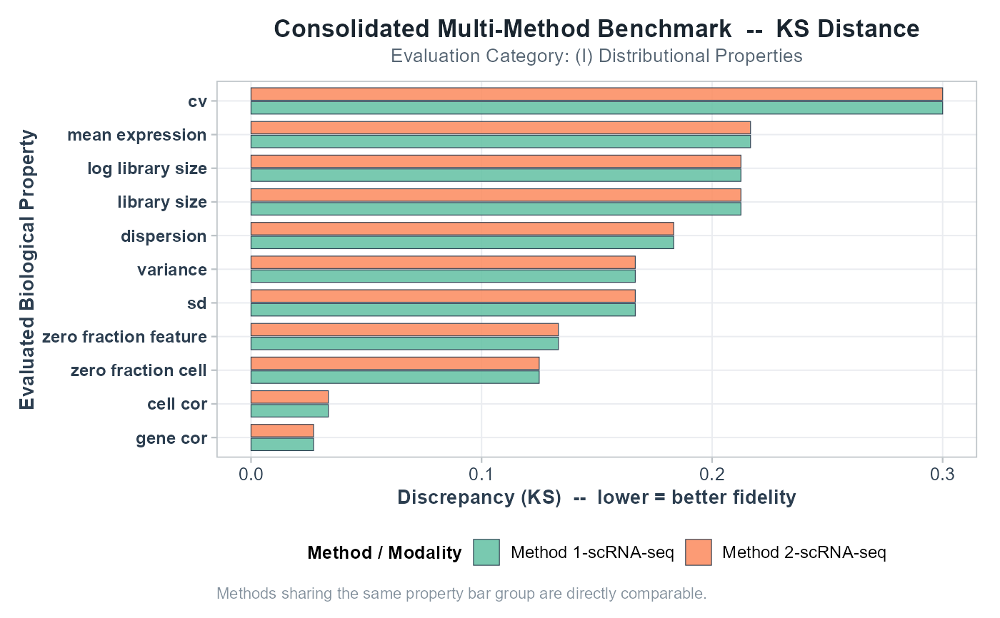

Plot Consolidated Multi-Method Benchmark Summary
Source:R/10_visualizations.R
plot_consolidated_summary.RdGenerates a 600 DPI comparative grouped bar chart across multiple
simulation methods evaluated with evaluate_multiple_datasets().
Usage
plot_consolidated_summary(
consolidated_res,
category = "(I) Distributional Properties",
metric = "KS",
properties = NULL,
facet_by_category = FALSE
)Arguments
- consolidated_res
Output from
evaluate_multiple_datasets()or a consolidated summarydata.frame.- category
Character string specifying evaluation category to filter by. Default
"(I) Distributional Properties".- metric
Character. Metric to plot. Default
"KS".- properties
Character vector of specific properties to include. Default
NULL(all).- facet_by_category
Logical. Facet by evaluation category. Default
FALSE.
Examples
data(example_scrna)
datasets <- list(
"Method 1-scRNA-seq" = list(ref = example_scrna$ref, sim = example_scrna$sim),
"Method 2-scRNA-seq" = list(ref = example_scrna$ref, sim = example_scrna$sim)
)
consolidated <- evaluate_multiple_datasets(datasets, compute_bivariate = FALSE, verbose = FALSE)
p <- plot_consolidated_summary(consolidated, metric = "KS")
print(p)
